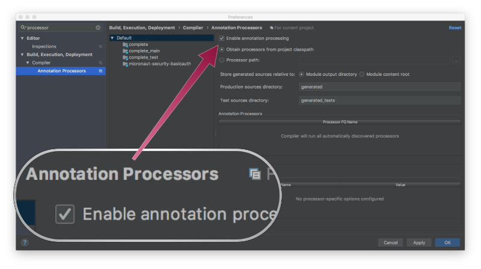

Using IntelliJ IDEA to develop Micronaut applications
This guide teaches you how to set up IntelliJ IDEA to develop Micronaut applications.
1. IntelliJ IDEA features for Micronaut Framework
IntelliJ IDEA comes in two flavors Ultimate and Community Editions. You can develop Micronaut applications with the community edition. However, the Ultimate edition has several extra features tailored to the Micronaut Framework.
IntelliJ IDEA provides the following:
Coding assistance specific to the Micronaut API and the configuration file parameters. For example, when writing query methods, generating HTTP requests for defined endpoints, and so on.
Integration with the Bean Validation and Endpoints tool windows.
A dedicated project creation wizard based on launch.micronaut.io.
A dedicated run configuration for Micronaut applications.
2. IntelliJ IDEA and Maven
You can build Micronaut Framework with Maven. The Micronaut Maven Plugin offers a great development experience.
IntelliJ IDEA supports Maven out of the box both in the community and ultimate editions.
2.1. Build and run actions
| Some features such as test resources rely on the Micronaut Maven Plugin being used to run and test your application. |
Build a project with Maven
Click Maven settings in the Maven tool window. Alternatively, from the main menu select File | Settings | Build, Execution, Deployment |Build Tools | Maven.
Click Maven and from the list, select Runner.
On the Runner page, select Delegate IDE build/run actions to maven.
2.2. Enable annotation Processing
If you don’t delegate build and run actions to maven, make sure to enable annotation processing for Java and Kotlin applications
